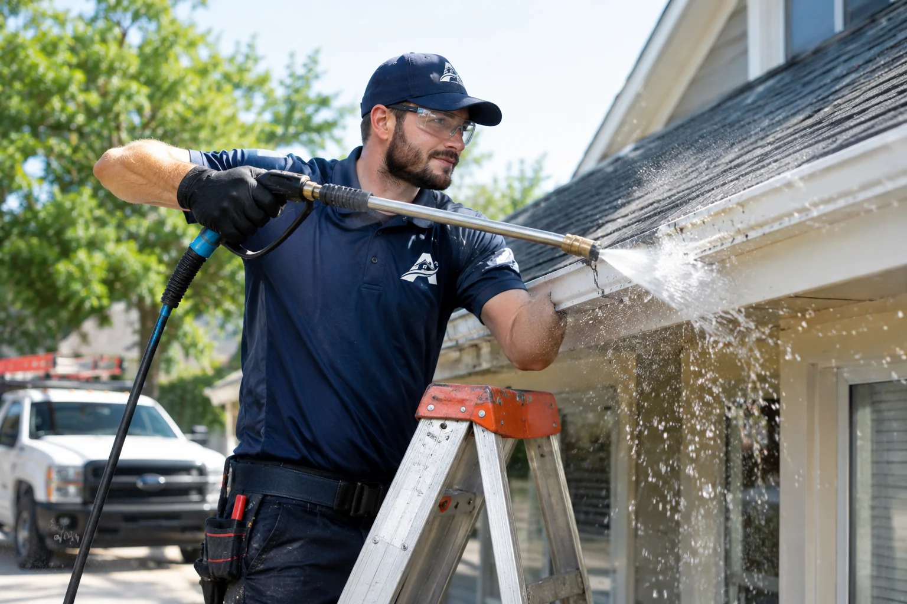
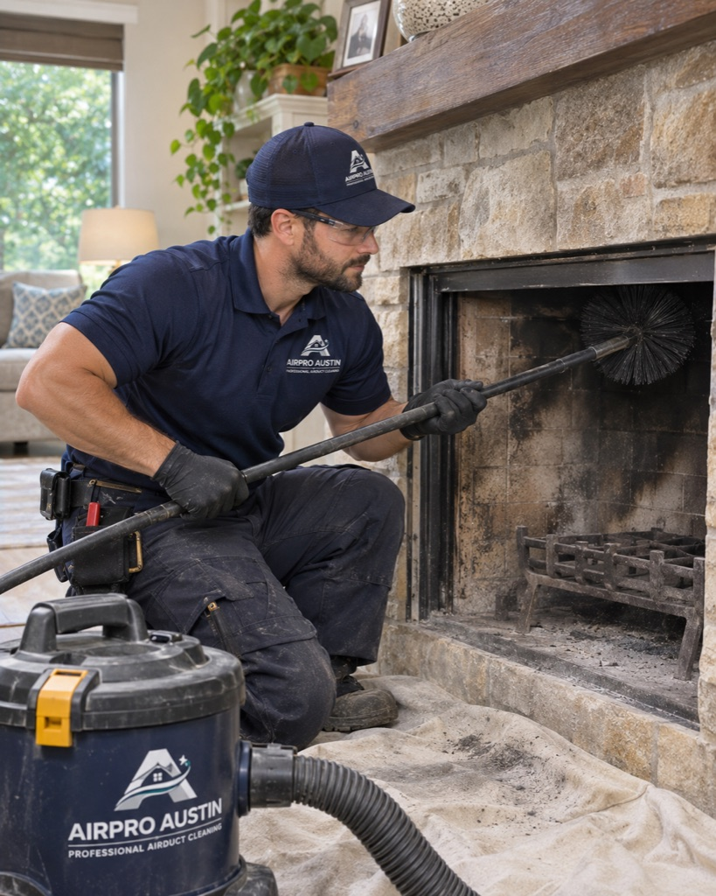
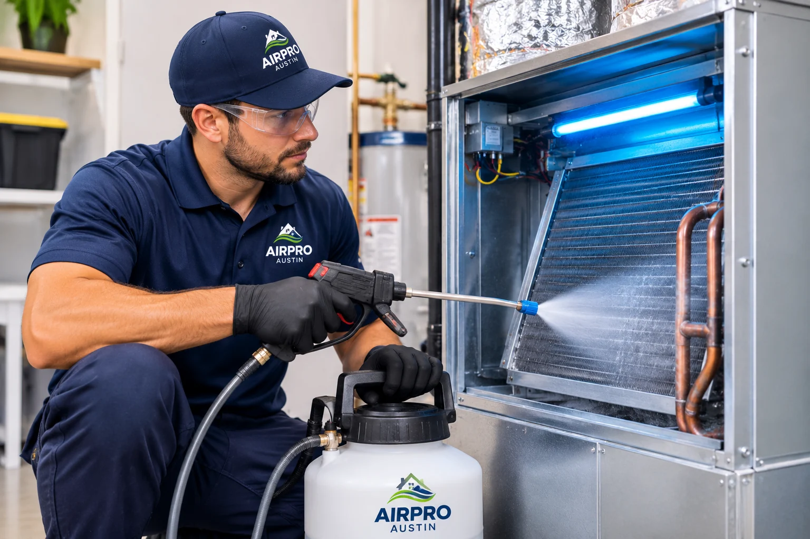
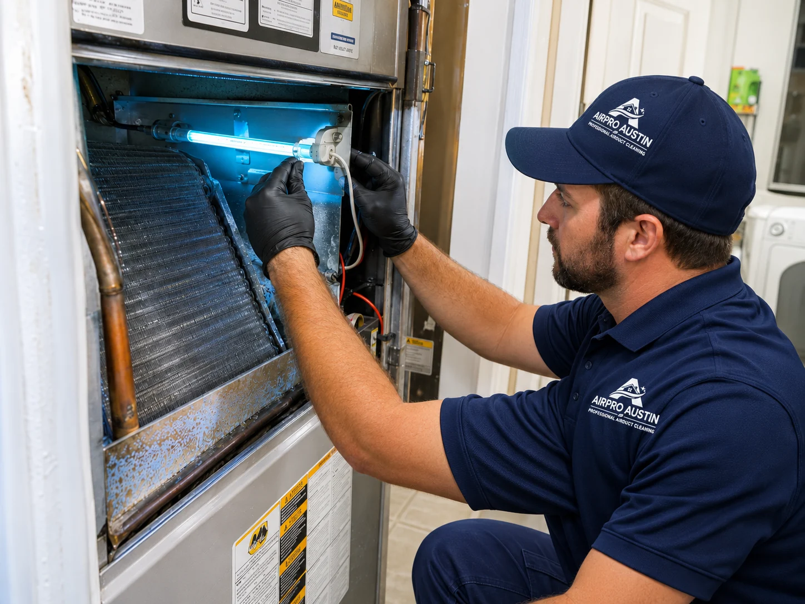

Clothes Need More Than One Cycle
Restricted exhaust airflow may leave clothes damp after a normal cycle. Check the lint filter and vent before assuming the dryer needs replacing.
Clothes Taking Too Long to Dry?


WARNING SIGNS
Lint can build up in the exhaust duct and limit airflow. The dryer itself can also cause drying problems, so the vent and appliance may both need attention. Whirlpool explains several reasons clothes take too long to dry.
Restricted exhaust airflow may leave clothes damp after a normal cycle. Check the lint filter and vent before assuming the dryer needs replacing.
A very hot dryer can mean poor venting or an appliance problem. If you notice a burning smell, stop using it until the cause has been checked.
Lint near the outlet or an exterior flap that does not open properly may signal a restriction in the exhaust path.
A restricted vent may have trouble carrying warm, moist air outside. The vent route and dryer should be checked for the cause.
See What Our Google Customers Are Saying
“They were available same day. Seemed to do a very detailed cleaning. Very nice & easy to work with.”
“Roy was thorough and explained my options. He was very understanding and worked with me to get the job done. My vents are clean and it’s was an easy process.”
“AirPro Austin is very efficient and knows what they’re doing!”
“Roi made a special trip at the last minute at the end of the day, very professional. Thank you!”
“Roy knew exactly what to do”
“Great work. Prompt arrival, diagnosed the problem and fixed it same day. Would recommend for future work.”
DRYER VENT COMPONENTS

The accessible exhaust duct, dryer connection, and vent route are reviewed to understand the cleaning scope. Long or roof-exit runs may require a separate quote.

Lint and loose debris are removed from the agreed vent run using equipment suited to the duct. Cleaning does not repair a damaged or disconnected section.

The outdoor exhaust opening is checked for visible lint or blockage where safely accessible. The vent cover should allow exhaust air to escape when the dryer operates.

After cleaning, the accessible vent path and exhaust airflow are reviewed for remaining concerns. A restricted or damaged system may need further work.
SERVICE OPTIONS

Lint buildup in an otherwise sound vent run may be addressed through cleaning. The agreed cleaning scope includes the vent path and an airflow check, not appliance repair.
Get a Dryer Vent Cleaning EstimateA crushed duct, loose connection, damaged vent cap, or poor route may keep restricting airflow after lint is removed. Explore dryer vent repair and replacement or dryer vent installation and rerouting when cleaning alone is not enough. The Building America dryer venting guide explains why duct material and routing matter.
Real Experiences Shared by Our Customers on Yelp

★★★★★
“Air ducts seem clean and I really like the UV light installed.”
★★★★★
“Roi was very friendly and did an excellent job at explaining the details of the job. Well done!”
★★★★★
“Roi and Eric worked efficiently and effectively to solve our issue. New filters and uv lights. Recommend them anytime.”
★★★★★
“Top-shelf customer support, timing, problem solving, and responsiveness.”
★★★★★
“Roi was great to work with. He explained what needed cleaning and showed us what was inside the vents. Really happy with how everything turned out.”
★★★★★
“Our dryer was taking two cycles to finish a load. They cleaned out a lot of lint, and it's been working much better since. Glad we called.”
★★★★★
“We had a lot of dust left over from remodeling. Roi and his team were careful around the house and showed us photos of the ducts. Good experience overall.”
★★★★★
“First time having our chimney cleaned in a while. The guys explained everything before starting and cleaned up after themselves. Would use them again.”
★★★★★
“Easy to schedule and they showed up when expected. Roi was friendly, answered my questions, and got the dryer vent cleaned without any issues.”
★★★★★
“Had a UV light installed in our AC system. They walked me through how it works and what maintenance it needs. Appreciate them taking the time to explain it.”
★★★★★
“Very professional from start to finish. They protected the area around our fireplace and didn't leave a mess behind. The whole appointment went smoothly.”
★★★★★
“Our gutters were packed with leaves. They cleared everything out and pointed out a section we should keep an eye on. Straightforward service.”
★★★★★
“Roi was very helpful and didn't rush through the appointment. He explained why the vent was getting clogged and answered all my questions. I'd definitely call again.”
★★★★★
“Good communication and easy scheduling. The crew showed us what they found in the ducts and explained the work before doing anything extra. No complaints.”
ASSESSMENT AND SERVICE WORK
Cleaning begins by checking where the dryer exhaust travels and where lint may have collected. The vent path and access points help determine which areas can be cleaned as part of the agreed service.

Lint can collect near the outside vent, and a blocked outlet can restrict exhaust flow even after the indoor connection is cleaned. The U.S. Consumer Product Safety Commission advises keeping dryer exhaust vents clear.

ESTIMATE DETAILS
AirPro Austin's existing advertised basic dryer vent cleaning offer is $99 for an eligible standard vent run, including an airflow inspection. Roof access, longer runs, repairs, and additional work may cost extra.
BASIC CLEANING
$99
Basic cleaning for an eligible standard dryer vent run, with an airflow inspection. Confirm eligibility and the agreed scope before booking.
Book Dryer Vent CleaningSITE CONDITIONS
Roof-exit vents, long or difficult-to-reach runs, damaged duct sections, and other extra work are quoted separately. Ask for the scope and price before approving it.
Call About Your Dryer VentBASIC BUNDLE
$298
The existing advertised offer combines eligible basic air duct cleaning and standard dryer vent cleaning. Each service's scope and eligibility apply. Additional work is quoted separately.
Ask About the Basic BundleWhy Homeowners Choose AirPro Austin on Thumbtack
★★★★★
“Roi did an amazing job with my vent cleaning. He took time to explain how everything worked and did incredible work. I will use him for every yearly cleaning from here on out. 10/10 experience!!!”
★★★★★
“Roi was amazing - went above and beyond to clean a very challenging duct. Cleaned up afterward. So glad I used Airpro Austin. Highly recommend!”
★★★★★
“Roy is amazing! Knowledgeable, professional and an expert in his field. He explained every step along the way...even drew sketches of the process to clean our air ducts and all the vents. Plus, a very nice man who strives to do a great job.”
★★★★★
“Roi showed up the next day and inspected and gave us a quote. When we accepted the quote he showed up the next day to begin work.”
★★★★★
“He shared options and pricing quickly with me and was flexible to the fact that I was in between meetings while he worked.”
★★★★★
“They did a great job! Very responsive.”
★★★★★
“Roy was great and thorough. Identified the exact problem and gave me a quick estimate on time and cost. Was in and out quickly”
★★★★★
“Roy did a great job in helping with our duct cleaning. He provided detailed estimates and provided the service that is only required.”
★★★★★
“They responded right away and were able to take care of the dryer vent cleaning immediately. Will recommend for future services.”
★★★★★
“Cleaned out clogged dryer vent and reconnected it. Showed up on time and did what was needed to fix the issues shown in the photos below. Would hire again.”
YOUR SERVICE VISIT
Tell us if clothes take more than one cycle, the dryer feels unusually hot, or lint has collected outside. Mention whether your vent exits through a wall or roof.
The accessible exhaust path and vent opening are reviewed. Lint and debris are removed from the agreed vent run using appropriate cleaning equipment.
Exhaust airflow is checked after cleaning. If a damaged duct, blocked outlet, or long vent route needs separate work, the next steps and price should be discussed before approval.
DRYER VENT & DUCT CARE

Crushed, disconnected, or damaged exhaust ducts may need repair or replacement. Cleaning alone does not fix damaged vent materials.

A long or poorly routed exhaust path may need a different layout to address recurring airflow restrictions. Installation work is quoted separately.

Supply and return air ducts are separate from your dryer exhaust vent. Ask about the approved basic bundle if you need both cleaning services.
LOCAL TO YOUR HOME
AirPro Austin serves homeowners in Austin, TX, and nearby communities. Choose your city to ask about dryer vent cleaning availability for your address.
BEFORE YOU BOOK
Once a year is a common recommendation. Clean it sooner if drying takes longer than normal or airflow seems restricted. Fairfax County Fire and Rescue recommends annual vent cleaning or more often when needed.
The existing basic offer covers cleaning an eligible standard dryer vent run and an airflow inspection. Longer runs, roof access, repairs, and other additional work are quoted separately.
AirPro Austin's current published basic offer is $99 for an eligible standard vent run. Confirm the price, scope, and any additional charges for your vent before booking.
AirPro Austin lists roof-vent cleaning among its services. Roof height, safe access, and vent configuration may affect availability and price, so mention the roof exit when requesting service.
No. The lint filter should be cleaned before or after each load, but lint can still collect inside the exhaust duct. The CPSC recommends regular cleaning of both.
It may help when lint is restricting airflow. Long drying times can also come from load size, settings, or appliance problems, so cleaning is not a guaranteed fix. Whirlpool explains other causes of slow drying.
Removing lint buildup addresses one known fire hazard, but it does not eliminate all dryer fire risks. The U.S. Fire Administration identifies failure to clean as a major contributing factor in dryer fires.
No. Crushed ducts, broken connections, damaged vent caps, and rerouting needs are separate from basic cleaning. Ask for a clear quote before approving repairs.
AirPro Austin's existing service page estimates about one hour for many residential appointments. Long runs, heavy buildup, roof access, or additional work may take longer.
Yes. AirPro Austin's existing advertised basic bundle is $298 for eligible basic air duct cleaning and standard dryer vent cleaning. Each service's scope applies; confirm the offer and any extra work before booking.
REQUEST SERVICE
Tell us if your clothes take too long to dry, the dryer feels hot, or you have noticed lint near the outside vent. Share a few details so we can confirm your cleaning options and next steps.
GET A FAST QUOTE 100% FREE
Choose a preferred time for your dryer vent cleaning estimate.
Need to speak with someone? Call (512) 677-1878.
AROUND YOUR HOME
Looking for help with another part of your home? Explore our other services.

Gutter cleaning and maintenance to help keep rainwater moving.

Remove soot, creosote, and debris from the chimney. Cleaning does not repair damaged chimney parts.

Explore available disinfection options for eligible HVAC systems and how they differ from routine cleaning.

Explore HVAC UV Light options for compatible HVAC systems.